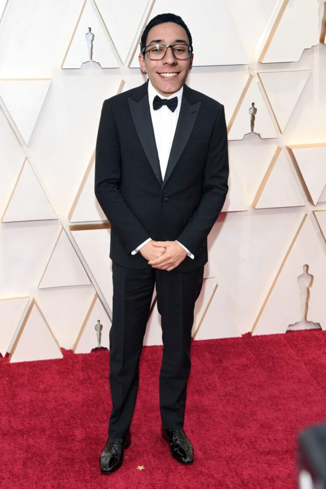

- Home
- >
- Carreira
Carreira
Dados Pessoais

Nome:
Brenno de Oliveira da Rosa
Data de Nascimento:
05/05/2003
Residência:
Campinas - SP
Idiomas:
Português (Nativo)
Inglês (intermediário)
Sobre Brenno
O jovem iniciou sua carreira quando ainda era criança em anúncios de televisão e filmes educacionais. Em 2009, teve o seu primeiro papel de maior destaque na série A Grande Família, o alavancando para o reconhecimento internacional. Em 2012, Brenno estreou-se no cinema com o filme "Despertar de um Homem", protagonizado por Robert DeNiro. Foi o próprio DeNiro que escolheu Brenno entre 400 jovens atores para interpretar o papel de seu enteado.
Brenno na verdade é um jovem de 18 anos com bastante tempo livre em suas férias e algumas ideias diferenciadas, as quais fazem ele implementar projetos como este portfólio que você está lendo. Mesmo não sabendo realizar edições a um nível profissional, Brenno gosta de explorar ferramentas de design e edição, tais como Photoshop, CorelDraw e Premiere, a fim de tentar concretizar algumas ideias que passam por sua cabeça. Assim, este site é uma forma de treinar os conhecimentos adquiridos na primeira etapa de capacitação, fornecidos pelo processo seletivo da Asimov Jr.
Durante longos anos dentro do universo cinematográfico, o ator recebeu algumas premiações por seu desempenho. Brenno recebeu prêmios nacionais por sua atuação em “Tropa de Elite” e também o prêmio Oscar de melhor ator pelos filmes “Coringa” e “O Poderoso Chefão”. Em seu tempo livre, Brenno gosta de tocar violão, jogar videogame e ouvir música, além de ver filmes e sair com os amigos. As demais informçaões desta sessão são referente a pessoa, e não ao personagem.
Educação
2021 - Em andamento
Engenharia de Computação - UNIFEI
2018 - 2020
Eletrônica - ETEC Bento Quirino
Eventos
2020
Bragantec – Feira de Ciências e Tecnologia – Instituto Federal de São Paulo
Bentotec – Feira de Ciências e Tecnológia – ETEC Bento Quirino
2019
Fórmula Drone – SAE BRASIL – Itajubá-MG
Campus Party – Amostra de Projetos – Robótica Paula Souza
2018
Olimpíada Brasileira de Robótica – Modalidade Prática
Bentotec – Feira de Ciências e Tecnológia – ETEC Bento Quirino
Contato
brenno.bor@gmail.com
(19) 98282-4813
← Voltar ao início